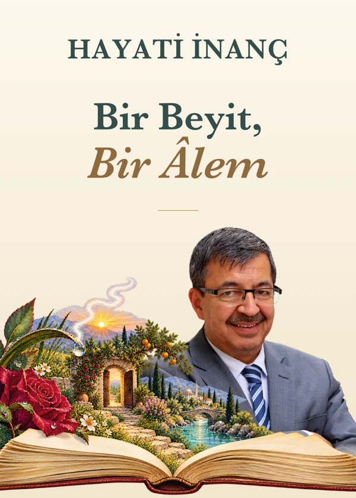

Sözden manaya
Bir Beyit,
Bir Âlem
Okuduğunuz beyti bir de
Hayâtî İnanç Hocamızdan dinleyin.
Beyitler kitaptaki sıralarıyla burada. Bir beyit seçin; okuyuşuna ve izahına kulak verin.
Beyitlere geç
Kitap sırasıyla
52 beyit
Bu aramada beyit bulunamadı. Başka bir kelime deneyebilirsiniz.